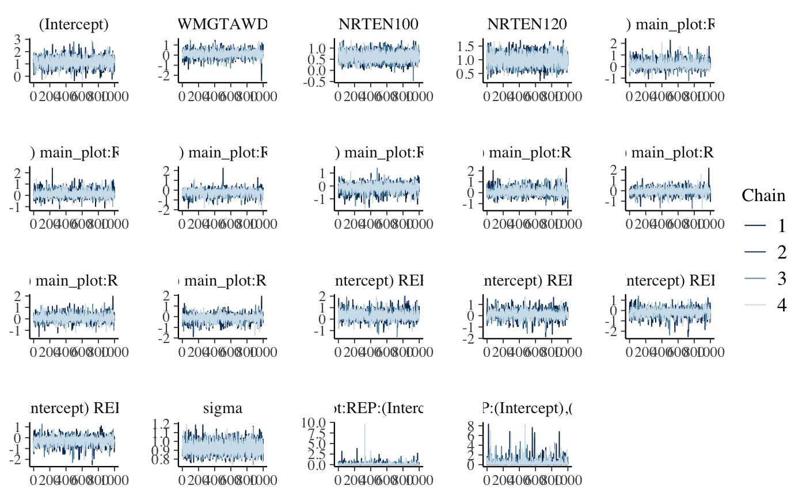
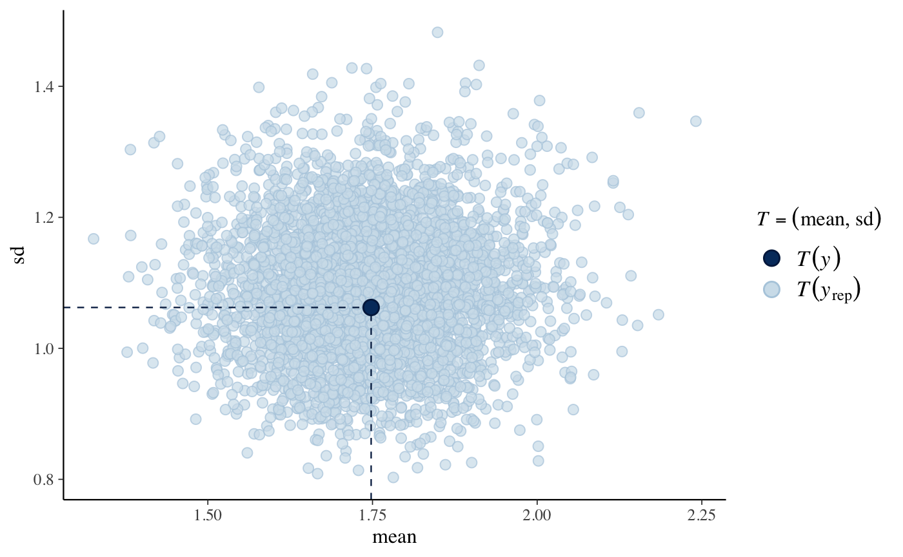
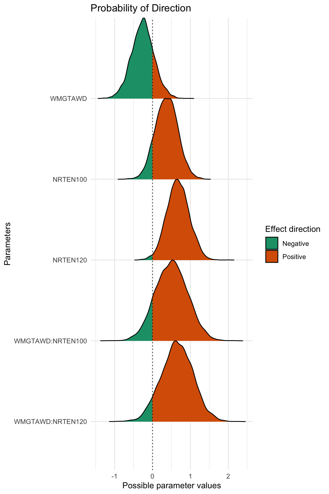

2015 Tiller Sheath Blight Incidence Analysis
A. H. Sparks
2020-07-08
Source:vignettes/a04_2015_TshB_inc_analysis.Rmd
a04_2015_TshB_inc_analysis.RmdFor this analysis, I’ve elected to use MCMCglmm for a Bayesian analysis. When comparing the treatments in the analysis, the model compares each treatment to the base (control) treatment.
The base levels for this analysis are:
NRTE:0WMGT:PDL
Setup
Load libraries and set seed for reproducibility.
library("rice.awd.shb") library("MCMCglmm") library("pander") library("bayestestR") library("ggplot2") set.seed(27)
The AUDPS object is loaded with the rice.awd.shb R package. To see how the AUDPS data were generated from the original raw data, see the vignette detailing the data processing file. However, because it is a tibble() and the treatments exist in a single column for graphing the raw data, this object needs a few minor changes to be usable for the analysis.
Create individual data frames for the analysis.
# create 2015 data frame AUDPS_2015 <- as.data.frame(AUDPS[AUDPS$YEAR == 2015,]) AUDPS_2015 <- droplevels(AUDPS_2015) # relevel factors for easier interpretation of analysis AUDPS_2015 <- within(AUDPS_2015, NRTE <- relevel(NRTE, ref = "N0")) AUDPS_2015 <- within(AUDPS_2015, WMGT <- relevel(WMGT, ref = "PDL"))
Now that the AUDPS_2015 and AUDPS_2016 data frames exist, we can start the analysis.
Tiller Sheath Blight Incidence Model
Model Structure
Tiller sheath blight incidence AUDPS, TShB_incidence_AUDPS is the response variable. Water management, WMGT, and nitrogen rate, NRTE, are fixed effects. Replicate, REP, is treated as a random effect.
Diagnostics and Summary
plot(m1)

DIC: 334.1
fixed.formula: TShB_incidence_AUDPS ~ WMGT * NRTE
random.formula: ~REP
residual.formula: ~units
-
solutions:
post.mean l-95% CI u-95% CI eff.samp pMCMC (Intercept) 1.337 0.427 2.388 5700 0.02596 WMGTAWD -0.2586 -0.8536 0.3251 5700 0.3709 NRTEN100 0.3705 -0.1858 0.9617 5508 0.2172 NRTEN120 0.6733 0.1069 1.252 5378 0.02246 WMGTAWD:NRTEN100 0.5035 -0.3138 1.33 5700 0.2298 WMGTAWD:NRTEN120 0.6502 -0.2276 1.395 5700 0.1242 -
Gcovariances:
post.mean l-95% CI u-95% CI eff.samp REP 1.123 7.563e-05 3.637 4286 Gterms: 1
-
Rcovariances:
post.mean l-95% CI u-95% CI eff.samp units 0.8809 0.6648 1.125 5700 Rterms: 1
cstats: 3001, 59991, 10 and 5700
cutpoints:
pd <- p_direction(m1) pander(pd)
| Parameter | pd |
|---|---|
| (Intercept) | 0.987 |
| WMGTAWD | 0.8146 |
| NRTEN100 | 0.8914 |
| NRTEN120 | 0.9888 |
| WMGTAWD:NRTEN100 | 0.8851 |
| WMGTAWD:NRTEN120 | 0.9379 |
plot(pd) + scale_fill_brewer(palette = "Dark2") + theme_minimal()

Save Model Information
Lastly, save the model information to be used in discussing the results.
saveRDS(m1, "../analysis/data/derived_data/TInc15.Rds", compress = "bzip2")